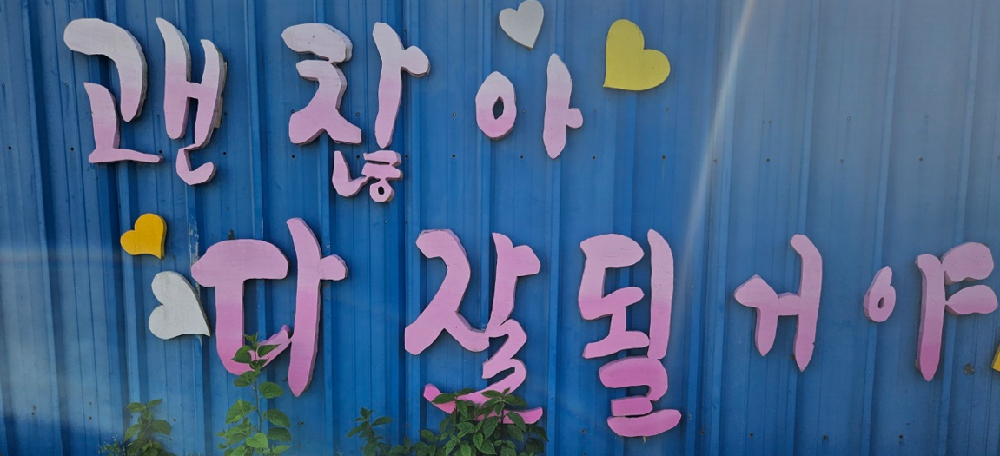

1. 초등 4학년의 의미 및 정의
초등 4학년은 부모의 의존성에서 벗어나 자율성과 독립성을 강화하는 시기로, 정서, 인지, 사회성이 균형적으로 성숙하는 중요한 전환점이다. 이 시기의 아동은 책임감, 선택의식, 자기결정권 등에 대한 민감도가 높아지며, 점차 자기주도적 행동이 두드러진다. 단순 암기와 반복 학습에서 벗어나, 논리적 이해와 문제해결 중심의 고차원적 학습을 요구받는다. 국어, 수학, 과학 등 다양한 교과에서 개념의 관계를 파악하고 추론하는 능력이 강조되며, 학습 속도와 성취감에서 개인차가 뚜렷해지기 시작한다. 또한 자신이 어떤 사람인지, 무엇을 잘하고 좋아하는지에 대한 탐색이 활발해진다. 또래나 교사의 평가, 비교 경험 등을 통해 자기 개념을 정립하며, 긍정적인 피드백은 자신감 형성에 큰 영향을 미친다. 반면 실패나 부정적 경험은 자존감 저하로 이어질 수 있다. 특히 가족보다 또래의 의견과 인정이 중요한 사회적 기준이 되며, 친구와의 소속감과 상호작용을 통해 사회 규범을 습득한다. 이 시기의 사회적 관계는 협동, 리더십, 타협, 공감 등의 능력 발달에 큰 영향을 미치며, 또래 집단 내에서의 위상이나 인기 여부가 정서 안정에도 영향을 준다.

2. 신체적 특성
1) 성장 속도의 완만화
초등4학년 시기에는 신체 성장 속도가 이전보다 완만하지만 지속되며, 키와 체중이 평균적으로 꾸준히 증가한다. 이 시기의 성장 속도는 유전과 영양, 수면 습관, 신체활동 수준에 따라 다르게 나타나며, 간혹 초기 성조숙 현상을 겪는 아동도 나타난다.
2) 소근육과 대근육 조절 능력 향상
초등4학년은 손글씨 쓰기, 공 만들기, 퍼즐 맞추기, 연주 활동 등에서 정교함과 안정성이 향상된다. 또한 눈과 손의 협응력과 신체 중심 조절 능력이 강화되어 복잡한 동작도 수행 가능하며, 미술, 체육, 음악 등의 교과 활동에서 성취감을 경험할 수 있다.
3) 운동 능력의 발달
초등4학년은 달리기, 줄넘기, 공놀이 등의 운동을 즐기며, 민첩성, 지구력, 협동 능력이 향상된다. 이는 팀워크와 규칙 이해, 경쟁에 대한 태도 형성에도 영향을 미치며, 규칙을 따르는 협동놀이와 팀 스포츠에서 또래 관계 기술이 함께 발달한다.
4) 자기 몸에 대한 인식 시작
초등4학년은 거울 보기, 옷차림 꾸미기, 체형 비교 등에 민감해지며, 외모에 대한 자기 평가가 시작된다. 특히 또래로부터 받는 외모 평가나 놀림은 자아존중감에 직접적인 영향을 주기 때문에 긍정적인 신체 이미지 형성이 중요하다.
3. 인지적 특성
1) 구체적 조작기
피아제 이론에 따르면, 초등4학년 시기의 아동은 구체적인 사물에 대한 논리적 사고가 가능하며, 보존 개념, 가역성, 분류 등의 개념을 이해할 수 있다. 예를 들어, 동일한 양의 물을 다른 모양의 컵에 옮겨도 양이 같다는 것을 인식한다. 그러나 아직 추상적 개념이나 가설적 사고는 미흡하다.
2) 탈중심화 능력 발달
초등4학년은 타인의 시각이나 감정을 고려할 수 있는 능력이 향상되며, 자기중심적 사고에서 벗어난 보다 유연한 사고가 가능해진다. 이를 통해 협동, 설득, 협상과 같은 사회적 기술의 기반이 형성된다. 다만 감정적으로는 여전히 자기 중심성이 드러나기도 한다.
3) 분류와 서열화 능력 향상
초등4학년은 사물이나 정보를 기준별로 분류하고, 숫자나 개념을 크기나 순서에 따라 배열할 수 있다. 예를 들어, 도형의 크기별 정렬, 과일 종류별 분류 등이 가능하며, 과학적 탐구나 수학 개념 학습에서 이 능력이 중요한 기초가 된다.
4) 자기조절 학습 시작
초등4학년은 자신의 학습 습관, 과제 수행 과정에 대한 인식이 생기며, 실수 원인을 파악하고 개선하려는 시도가 나타난다. 이는 메타인지적 사고의 출발점으로, 학습계획 수립, 시간관리, 학습결과 점검 등의 자기조절 행동이 점차 형성된다.
4. 사회적 및 정서적 특성
1) 또래 관계의 중요성 증가
초등4학년은 친구와의 놀이, 대화, 팀 활동에서의 관계가 정서적 안정감에 큰 영향을 미친다. 이 시기에는 소속 집단에 대한 충성심, 배려심, 친구를 향한 질투 등 다양한 사회적 감정이 드러나며, 거절이나 따돌림 경험은 정서적 상처로 이어질 수 있다.
2) 도덕성 발달의 초기 단계
초등4학년은 규칙을 단순히 외우는 것이 아니라, 규칙의 의미와 공정성에 대해 고민하게 된다. 로렌스 콜버그(Kohlberg)의 이론에 따르면 이 시기는 도덕성의 '협동적 도덕 판단'이 시작되는 시기로, 상황에 따라 판단 기준이 달라지기도 한다.
3) 자기감정 인식과 조절 능력 성장
초등4학년은 분노, 실망, 기쁨, 당황 등의 감정을 점차 명확히 인식하고, 그에 따른 반응을 조절하려는 시도가 나타난다. 감정 조절 실패 시 공격적 행동이나 위축, 회피 등이 나타날 수 있으므로, 정서 코칭과 감정 언어 교육이 중요하다.
5. 부모와 교사의 역할
1) 자율성과 책임감을 길러주는 격려자 역할
초등4학년은 스스로 선택하고 결정하는 경험을 통해 자율성과 책임감을 기를 수 있도록, 부모와 교사는 과잉통제보다는 지도와 격려 중심의 태도를 가져야 한다. 숙제를 스스로 계획하게 하되, 마감일을 함께 점검하거나, 실수를 비난하기보다는 재도전 기회를 주는 방식은 자기 효능감 형성에 중요한 영향을 준다.
2) 정서 안정과 감정 조절을 돕는 안전기지 역할
초등 4학년은 정서적으로 불안정해질 수 있는 시기로, 부모와 교사는 아동이 감정을 편안하게 표현할 수 있는 정서적 울타리가 되어야 한다. 공감적 경청, 감정 언어를 명확히 말로 표현하도록 유도, 좌절감이 들 때 곁에서 조용히 지지하기는 사회적 안정감, 감정조절력 향상에 기여한다.
3. 학습과 생활 태도에 대한 일관된 지침자 역할
부모와 교사는 아동이 학습에 대해 긍정적인 태도를 갖도록 도우며, 생활습관, 규칙 준수, 시간 관리 등에 대해 일관된 메시지를 전달해야 한다. 부모는 가정에서의 학습 루틴을 정해주고, 교사는 학교에서의 과제에 대해 기대를 명확히 알려주는 식의 일관성 있는 지침은 아동의 혼란을 줄이고, 예측 가능한 환경에서의 안정감을 제공한다.
4) 사회성 발달을 지원하는 모델링 역할
초등4학년은 또래 관계를 통해 사회적 기술을 배우지만, 부모와 교사의 행동과 언어가 중요한 사회적 모델이 된다.
예: 교사가 교실 내에서 갈등 상황을 공정하게 중재하는 모습, 부모가 타인을 배려하는 언행을 자녀가 자연스럽게 관찰하는 경험 등.이는 공감 능력, 갈등 조절, 타인 존중과 같은 사회적 기술 형성에 직접적인 영향을 미친다.
2025.03.19 - [이론] - 초등5학년 교육적 접근방법, 사고력과 창의성 증가
초등5학년 교육적 접근방법, 사고력과 창의성 증가
1. 초등5학년 교육적 접근 방법초등 5학년 아동을 위한 교육적 접근 방법은 학습의 자기주도성을 높이고, 다양한 경험을 통해 창의적 사고를 촉진하는 방향으로 이루어져야 한다. 학습의 흥미를
think-sis.co.kr
2025.02.23 - [상담] - 초등3학년 외동아, 집에서 착하지만 사회적 관계에 부정적
초등3학년 외동아, 집에서 착하지만 사회적 관계에 부정적
진수는 초등학교 3학년 외동아들로 맞벌이 부모의 상황에서 주로 외할머니의 양육을 받아 성장해왔다. 외할머니의 엄격한 양육 태도로 인해 진수는 건강과 학업에서는 우수한 성과를 보이지만,
think-sis.co.kr
참고문헌
김경철 외 (2021). 『아동발달과 교육』. 학지사.
정옥분 (2020). 『아동발달의 이해』. 학지사.
Berk, L. E. (2018). Development Through the Lifespan(7th ed.). Pearson Education.